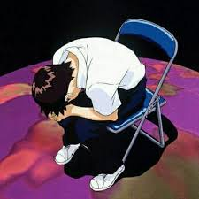

Shinji Ikari (碇 シンジ, Ikari Shinji) es el protagonista de la serie de anime Neon Genesis Evangelion.
Es el tercer niño y el piloto de la Unidad Evangelion-01.
Es un chico introvertido y melancólico, que sufre de depresión y ansiedad.
Tras el fallecimiento de su madre, su padre lo abandonó, y vivió durante 11 años con su sensei. Sin embargo, su vida dio un giro inesperado cuando fue convocado a Tokio-3 para pilotar la Unidad-01 y enfrentar a los Ángeles.